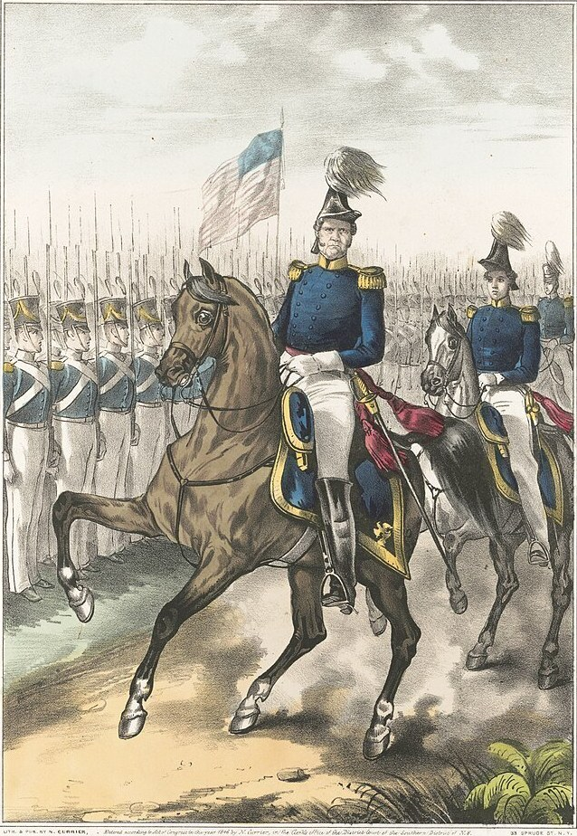
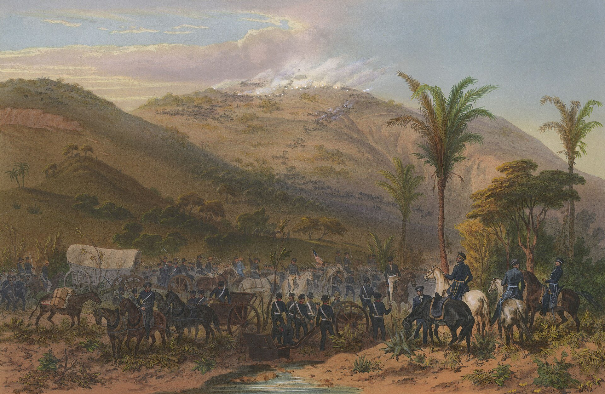

Optima Academy OnlineAn Education Experience Company
7th Grade Texas History · The Mexican-American War
Winfield Scott Captures the Halls of Montezuma
General Scott’s entrance into Mexico City. Hand-colored lithograph by Carl Nebel and Adolphe Bayot, 1851. Public domain.
Mini-lesson · Mr. Peregrin
A Second Road to the Capital
Today's Focus
The American army kept winning battles, but Mexico would not give up. So Polk sent a second army straight at the heart of the country.
In the first year of the war, American armies won victory after victory in northern Mexico. Still, the Mexican government did not give in. You will follow General Winfield Scott from the coast to Mexico City, see how the war ended, and learn what the peace did to the borders of Texas.
By the end of this lesson you will be able to…
describe how Taylor won at Monterrey, and why victories in the north did not end the war.
describe the main steps of Scott’s campaign from Veracruz to Mexico City.
explain why Robert E. Lee’s work as an engineer mattered.
explain how the treaty and the Compromise of 1850 settled the borders of Texas.
Quick Check-in
Before you read: what finally brought the war to an end? A guess is fine.

General Winfield Scott. Polk chose him to lead the army that would land on the coast. Lithograph by N. Currier, 1846, Library of Congress. Public domain (cropped).
Mr. Peregrin
Notice how the page gives each step of the landing: the navy first, then the army, then the siege.

Cerro Gordo. The battle of April 18, 1847. Hand-colored lithograph, Carl Nebel and Adolphe Bayot, 1851. Public domain.
Mr. Peregrin
Lee’s job was to read the land. Notice what a soldier who can do that gives an army.
The Road to the Capital
March 1847The army lands near Veracruz and takes the city after a siege.
April 1847At Cerro Gordo, Lee finds a path around the Mexican army, and the Americans win.
August 1847Battles at Contreras and Churubusco bring the army to the edge of Mexico City.
September 13, 1847The Americans storm the castle at Chapultepec.
September 14, 1847Mexico City falls.
A short timeline of the road to Mexico City.
⚡ TRY IT · WHAT HAPPENED WHERE?
Scott’s army fought its way to Mexico City in four stages. For each row, decide where it happened.
1. Lee found a path around the Mexican army, and the Americans won.
Right. At Cerro Gordo, Santa Anna had chosen a strong spot on the road, and Lee’s scouting let Scott hit the Mexican army from the side.
2. Young Mexican cadets helped defend a castle on a hill, and U.S. Marines joined the attack.
Right. The Americans stormed the castle at Chapultepec on September 13. Mexico remembers the cadets with honor.
3. The army landed from the sea, and the city surrendered after about three weeks.
Right. The navy kept up a blockade, Scott surrounded the city, and Veracruz surrendered. The army now had a harbor.
4. A field of sharp volcanic rock blocked the way, and Lee crossed it at night to carry a message.
Right. These battles in August 1847 brought the army to the edge of Mexico City.
Mr. Peregrin
The three cards after this paragraph give the terms of the treaty. Read them before the last paragraph.
What the Treaty Settled
The borderMexico gave up its claim to Texas. The Río Grande became the border. Texas had won the argument.
The landMexico also gave up California and a huge stretch of land between California and Texas. This is called the Mexican Cession. Mexico lost about half of its land.
The moneyThe United States paid Mexico $15 million. Mexicans who lived in the new lands could stay and become American citizens.
Mr. Peregrin
This paragraph names a question the new lands raised. Notice who wanted what.
⚡ TRY IT · WHAT SETTLED IT?
Each row names one result of the war. Decide which agreement settled it, or whether it was never settled that way at all.
1. Texas gave up its claim to land that is now part of New Mexico and other states.
Right. This was part of the Compromise of 1850, and it settled Texas’s western border.
2. The United States paid Mexico $15 million.
This payment went to Mexico. Think about which agreement ended the war with Mexico.
3. Congress banned slavery in all land won from Mexico.
Right. David Wilmot proposed it, and the House passed the idea, but the Senate did not. It never became law.
4. The United States paid Texas $10 million, which helped clear its debts.
Right. This came with the Compromise of 1850, in return for the land Texas gave up.
5. Mexico gave up California and the land between California and Texas.
Right. This is the Mexican Cession, and it was part of the treaty that ended the war.
The Verdict
Check the Record
Choose the best answer for each question.
Your Answer Now
Which choice in this story changed the most: Polk’s plan for a second army, the return of Santa Anna, or Trist’s decision to stay and finish the treaty? Answer in three or four sentences, using at least two details from the book.
Keep This in Mind
The war settled the border along the Río Grande and opened a harder question about slavery. Look back at the choices in this story, from Polk’s plan to Santa Anna’s return to Trist’s decision to stay. Which choice do you think changed the most?